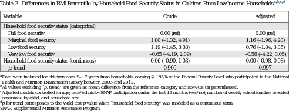

|

corpus-oa-validation/10.1016_j.amepre.2016.09.009/tables/table2/table.svg.png
|
| Variable |
Crude |
Adjusted |
| Household food security status (categorical) |
|
|
| Full food security |
0.00 (ref) |
0.00 (ref) |
| Marginal food security |
1.80 (–1.32, 4.91) |
1.16 (–1.96, 4.28) |
| Low food security |
1.19 (–1.45, 3.83) |
0.76 (–1.84, 3.35) |
| Very low food security |
–0.65 (–4.19, 2.89) |
–0.58 (–4.22, 3.05) |
| Household food security status (continuous) |
0.06 (–0.90, 1.03) |
0.00 (–0.98, 0.98) |
| p, trend |
0.900 |
0.997 |
corpus-oa-validation/10.1016_j.amepre.2016.09.009/tables/table2/table.svg.html
|

corpus-oa-validation/10.1016_j.amepre.2016.09.009/tables/table3/table.svg.png
|
| Variable |
Non- participant |
Participant |
0–1 lunch/ week |
2–3 lunches/ week |
char: 90; name: Z; f: AdvEls-ent5; fn: EANLGG+AdvEls-ent5; e: WinAnsi 4 lunches/ week |
| Household food security status (categorical) |
|
|
|
|
| Full food security |
|
|
|
|
| 0.00 (ref) |
0.00 (ref) |
0.00 (ref) |
0.00 (ref) |
0.00 (ref) |
| Marginal food security |
|
|
|
|
| 1.46 |
–0.59 |
1.23 |
1.38 |
0.40 |
| (–2.43, 5.34) |
(–6.87, 5.69) |
(–8.00, 10.46) |
(–9.75, 12.52) |
(–4.02, 4.82) |
| Low food security |
|
|
|
|
| 5.95 |
–2.94 |
6.77 |
1.35 (–6.66, |
0.84 |
| (1.11, 10.80) |
(–8.41, 2.53) |
(–0.70, 14.25) |
9.36) |
(–2.75, 4.43) |
| Very low food security |
|
|
|
|
| –1.41 |
–3.19 |
5.20 |
4.54 |
–3.51 |
| (–5.95, 3.12) |
(–22.61, |
(–3.61, 14.00) |
(–5.54, 14.62) |
(–8.72, 1.71) |
|
16.23) |
|
|
|
| Household food security status |
|
|
|
|
| 0.11 |
–0.34 |
1.75 (–0.79, |
1.07 (–1.74, |
–0.67 (–1.82, |
| (continuous) |
|
|
|
|
| (–1.11, 1.33) |
(–1.99, 1.31) |
4.29) |
3.89) |
0.49) |
| p, trend |
|
|
|
|
| 0.857 |
0.681 |
0.175 |
0.450 |
0.254 |
corpus-oa-validation/10.1016_j.amepre.2016.09.009/tables/table3/table.svg.html
|
|
corpus-oa-validation/10.1016_j.amepre.2016.09.009/tables/table1/table.svg.png
|
| Variable |
Full sample |
Underweight |
Normal weight |
Overweight |
Obese |
| Number of observations |
4,719 |
93 |
2,484 |
819 |
1,169 |
| Age, M ❶ char: 1; name: H11006; f: AdvPA264; fn: EANLNI+AdvPA264; e: Dictionary SD |
12.9 ❶ char: 1; name: H11006; f: AdvPA264; fn: EANLNI+AdvPA264; e: Dictionary 3.5 |
12.7 ❶ char: 1; name: H11006; f: AdvPA264; fn: EANLNI+AdvPA264; e: Dictionary 3.7 |
13.0 ❶ char: 1; name: H11006; f: AdvPA264; fn: EANLNI+AdvPA264; e: Dictionary 3.5 |
12.9 ❶ char: 1; name: H11006; f: AdvPA264; fn: EANLNI+AdvPA264; e: Dictionary 3.7 |
12.7 ❶ char: 1; name: H11006; f: AdvPA264; fn: EANLNI+AdvPA264; e: Dictionary 3.4 |
| Poverty-to-income ratio, M ❶ char: 1; name: H11006; f: AdvPA264; fn: EANLNI+AdvPA264; e: Dictionary SD |
1.0 ❶ char: 1; name: H11006; f: AdvPA264; fn: EANLNI+AdvPA264; e: Dictionary 0.6 |
1.0 ❶ char: 1; name: H11006; f: AdvPA264; fn: EANLNI+AdvPA264; e: Dictionary 0.7 |
1.0 ❶ char: 1; name: H11006; f: AdvPA264; fn: EANLNI+AdvPA264; e: Dictionary 0.6 |
1.0 ❶ char: 1; name: H11006; f: AdvPA264; fn: EANLNI+AdvPA264; e: Dictionary 0.7 |
1.0 ❶ char: 1; name: H11006; f: AdvPA264; fn: EANLNI+AdvPA264; e: Dictionary 0.6 |
| Household size, M ❶ char: 1; name: H11006; f: AdvPA264; fn: EANLNI+AdvPA264; e: Dictionary SD |
4.7 ❶ char: 1; name: H11006; f: AdvPA264; fn: EANLNI+AdvPA264; e: Dictionary 2.0 |
4.9 ❶ char: 1; name: H11006; f: AdvPA264; fn: EANLNI+AdvPA264; e: Dictionary 2.1 |
4.8 ❶ char: 1; name: H11006; f: AdvPA264; fn: EANLNI+AdvPA264; e: Dictionary 2.0 |
4.6 ❶ char: 1; name: H11006; f: AdvPA264; fn: EANLNI+AdvPA264; e: Dictionary 2.0 |
4.6 ❶ char: 1; name: H11006; f: AdvPA264; fn: EANLNI+AdvPA264; e: Dictionary 2.0 |
| Boy |
49.7 |
50.5 |
50.6 |
46.6 |
50.1 |
| SNAP participation |
30.41 |
34.63 |
28.30 |
30.87 |
33.80 |
| Household food security status |
|
|
|
|
|
| Full food security |
47.3 |
46.4 |
48.2 |
47.5 |
45.8 |
| Marginal food security |
14.2 |
8.5 |
13.6 |
15.2 |
15.0 |
| Low food security |
24.3 |
27.7 |
23.9 |
24.2 |
24.7 |
| Very low food security |
14.2 |
17.4 |
14.3 |
13.0 |
14.5 |
| NSLP participation |
|
|
|
|
|
| 0–1 lunch/week |
11.1 |
7.1 |
11.1 |
14.1 |
9.5 |
| 2–3 lunches/week |
8.4 |
5.9 |
7.6 |
10.2 |
9.1 |
| char: 90; name: Z; f: AdvEls-ent5; fn: EANLGG+AdvEls-ent5; e: WinAnsi 4 lunches/week |
80.5 |
87.0 |
81.3 |
75.6 |
81.3 |
| Race/ethnicity |
|
|
|
|
|
| Non-Hispanic white |
42.0 |
40.7 |
43.4 |
39.5 |
41.0 |
| Non-Hispanic black |
21.6 |
15.1 |
21.4 |
21.7 |
22.2 |
| Hispanic |
29.8 |
26.9 |
28.2 |
33.1 |
31.2 |
| Other |
6.6 |
17.3 |
7.0 |
5.7 |
5.5 |
| Marital status of head of household |
|
|
|
|
|
| Married |
54.6 |
56.5 |
56.1 |
54.3 |
52.1 |
| Widowed |
25.9 |
29.3 |
25.5 |
23.0 |
27.8 |
| Divorced/separated |
3.7 |
2.9 |
3.5 |
4.0 |
4.1 |
| Never married |
15.9 |
11.3 |
14.9 |
18.7 |
16.0 |
| Education level of head of household |
|
|
|
|
|
| Less than high school |
36.6 |
33.1 |
35.1 |
35.2 |
40.9 |
| High school |
29.1 |
32.8 |
29.5 |
27.7 |
28.3 |
| Some college |
26.3 |
27.5 |
26.0 |
28.8 |
25.3 |
| College and above |
8.1 |
6.6 |
9.3 |
8.2 |
5.5 |
| WIC participation during the last year |
18.1 |
20.2 |
17.4 |
19.1 |
18.4 |
| Survey wave |
|
|
|
|
|
| Wave 1 (2003–2004) |
20.3 |
16.8 |
21.2 |
22.8 |
17.2 |
| Wave 2 (2005–2006) |
17.3 |
11.6 |
17.8 |
16.4 |
17.7 |
| Wave 3 (2007–2008) |
20.4 |
26.0 |
20.5 |
18.5 |
20.5 |
| Wave 4 (2009–2010) |
19.7 |
28.2 |
19.6 |
19.2 |
19.7 |
| Wave 5 (2011–2012) |
22.2 |
17.4 |
20.9 |
23.1 |
24.9 |
corpus-oa-validation/10.1016_j.amepre.2016.09.009/tables/table1/table.svg.html
|